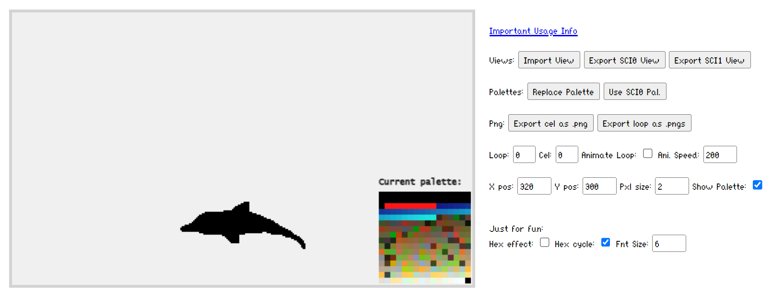

This program can convert between Sierra-Online's SCI0 and SCI1 view formats in either direction. While this can already be done by hand using SCICompanion, the goal of this project is to steamline the process of getting SCI0 views into an SCI1.1 game.
SCI1.1 views are not currently supported, but there is a SCICompanion hack to easily convert SCI1 to
SCI1.1 (See "SCI1.1 Hack" below). SCI2 and SCI3 views will likely never be supported by this application.
This link can be helpful to
determine the SCI version of a retail Sierra game.
Begin by clicking the "Import View" button. Select either an SCI0 view (view.xxx) or an SCI1 view (xxx.v56) from your computer. Loop 0, Cel 0 of the imported view should be displayed on screen.
The "Animate Loop:" checkbox can be used to verify that each cel imported correctly. The current palette is displayed by default, but can be hidden using the "Show Palette:" checkbox if desired. The x and y positions move the cel "origin" around the screen. Pxl Size will "zoom" the cel. None of these options effect either the view or png exports.
Once a view has been imported, it can be exported as either a SCI0 or SCI1 view using the "SCI0 View Export" or "SCI1 View Export" button.
When exporting to SCI0, the exisiting palette will be automatically converted to the nearest of the SCI0 16 color palette. The results will vary depending on the color range used in the original view and things can end up looking ugly. This palette conversion can also be done without exporting by clicking the "Use SCI0 Pal." button.
Before exporting a SCI0 view to SCI1, the default SCI0 palette MUST be replaced. Start by exporting the desired .pal file from SCICompanion, then click the "Replace Palette" button to import the file. This automaticaly converts all colors to the nearest match in the target palette. Note: Although SCI1.1 views are not supported in this application, both SCI1 & SCI1.1 .pal files can be used.
This application can also export a single cel or an entire loop to individual .png files. The resulting image files can then be imported in SCICompanion as an "Image Sequence" to quickly build loops by hand in SC. The drawback of this method is that the "origin" or x/y displacement offset of each cel is lost from the original view and needs to be set manually if it's not at the default position (bottom center of the cel).
Future support for SCI1.1 is planned, but might not be added for some time. Until then, there is a hack to easily convert SCI1 views to SCI1.1 in SCICompanion.
NOTE: This hack was added to Kawa's fork of SCICompanion sometime around 2022. This hack is NOT available in the version downloaded from the official scicompanion.com website. You must download and install a recent Kawa's build for this to work. It includes many other bug fixes over the outdated scicompanion.com version, so it's best to be using the Kawa build anyway.
To get from SCI0 to SCI1.1: Start by converting an SCI0 view to SCI1 using this program. Import the view into your SCI1.1 game project using SCICompanion. At this point the view will appear to display normally in SC, but will cause DOSBox to freeze if used in-game. To get SCICompanion to convert the view from SCI1 to SCI1.1, make any change to the imported view and save. Kawa's hack will internally convert the view to SCI1.1 if you're in an SCI1.1 project! It's recommended you change the color of any pixel, change it back, then save and rebuild resources. This only needs to be done for one cel per view as the conversion applies to the entire view.
Some SCI1 Views used merged palettes (correct term?) and will display incorrectly because they depend on another base palette (usually in the room's picture resource). For instance, View 362 from EQ1's Floppy version imports all non-transparency colors as black, because the view's embedded palette doesn't define the first 32 colors common between all views in EQ1 (see image below).

This problem is not corrected by importing a complete palette using this program. This is because the colors are still mapped to black in the replaced palette. Also, since the those intial colors can vary between games (or even versions of the same game) it's difficult to create a perfect fix for this issue.
Currently, the best solution for this issue is to copy the missing palette colors into the view's embedded palette BEFORE exporting the view from SCICompanion.
An imported view can be displayed as ASCII hex characters instead of pixels. This has no effect on either view or png exports.